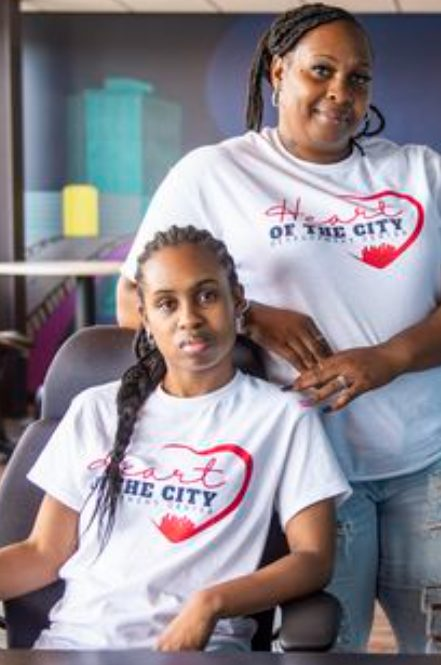

Our Story
Empowering People. Changing Lives. Building Stronger Communities.
At Heart of the City Development Center, we believe everyone deserves a place to belong. Through inclusive education, advocacy, life-skills development, and family-centered support, we empower children and adults of all abilities to reach their full potential.
Founder's Story
Cherie and I'Lexsis
From the old site · client to replace with the personal story and update datesCherie Long is the President of Heart of the City Development Center and the Founder of Love and Support Home Care. She has an extensive career in the healthcare field that spans over 23 years, including certifications as a Certified Nursing Assistant, in CPR and AED, Therapeutic Crisis Intervention, and as a Court Appointed Special Advocate. She received her associate degree from Delta College in 2022 and is working toward her bachelor's degree in social work.
Cherie received the 2023 Delta College Social Services Award and the 2023 Newman Civic Award from Saginaw Valley State University. She is a member of the Saginaw County Chamber of Commerce and Kiwanis International.
In addition to her career accomplishments, Cherie is raising a daughter, I'Lexsis, who was born developmentally delayed, so this center reflects her deep-rooted passions. Cherie is also an active volunteer in her community and is well known for helping and advocating for those who cannot advocate for themselves.

Our Daily Mission Is Built on Four Core Values.
Grow
Engage
Heal
All People. All Abilities. All Families. A Brighter Tomorrow.
Board members
[PLACEHOLDER: board member photographs and names, to be provided by the client]
Chamber of Commerce member
Heart of the City Development Center is a proud member of the Saginaw County Chamber of Commerce.